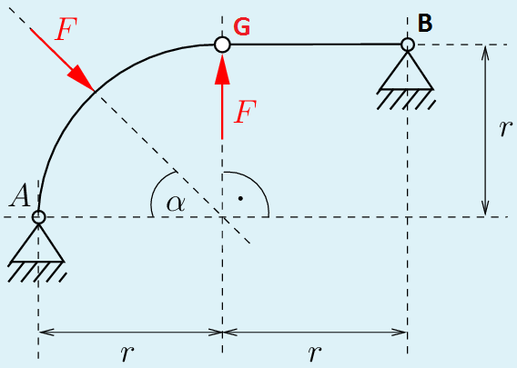
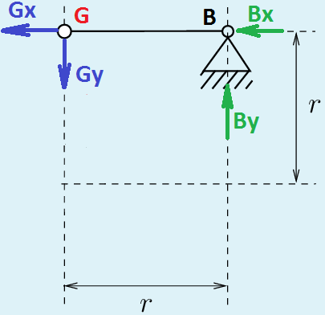
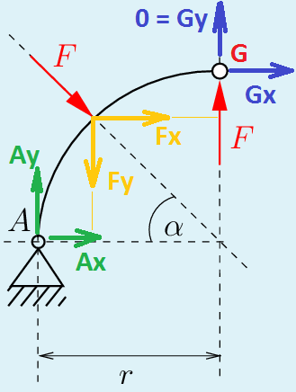

E-Test 1
Gegeben ist das obige ebene Tragwerk. Berechnen Sie die horizontale Lagerkraft am Auflager \( A \) in der Einheit \( kN \) für \( F = 80 \, kN \), \( \alpha = 21° \) und \( r = 4m \). Die gesuchte Auflagerkraft ist dabei nach rechts positiv anzusetzen.Gegebene Größen:
Belastung: \( F = 80 \, kN \)Wichtig für die Berechnung: Rechnen Sie mit mindestens drei Nachkommastellen und runden Sie das Endergebnis (horizontale Lagerkraft am Auflager \( A \) in der Einheit \( kN \)) auf eine Nachkommastelle. Geben Sie das Ergebnis mit Vorzeichen und einer gerundeten Nachkommastelle getrennt durch ein Komma an (z.B. \( +6,7 \) oder \( -13,4 \)).
Antwort: \( -126,0\,kN\)
Wir bezeichnen das Gelenk als \( G \) (vgl. Bild unten).
Das Gelenk \( G \) ist ein Verbindungsstück, das den linken Tragwerksteil mit dem rechten Tragwerksteil kombiniert. Um die horizontale Kraft am Auflager \( A \) zu ermitteln, wenden wir das Freischnittsprinzip an und schneiden das Tragwerk gedanklich in zwei Teile A und B auf (vgl. Bilder unten).
Linker Tragwerksteil A:
\( F_x = F \cdot cos(\alpha) \)
\( F_y = F \cdot sin(\alpha) \)
Rechter Tragwerksteil B:

Wir nehemen an, dass das System sich in der Gleichgewichtslage befindet. Für das rechte Teil B gelten folgende Momentengleichungen:
\( \begin{matrix} \curvearrowleft & \\ G :& 0 = r \cdot B_y \end{matrix} \)
\( \begin{align} \uparrow \; : \; 0 & = A_y - F_y + F + G_y \\ & = A_y - F_y + F + 0 \\ & = A_y - F_y + F \\ & = A_y - F \cdot sin(\alpha) + F \\ & = A_y + (1-sin(\alpha)) \cdot F \end{align} \)Wir merken an, dass die Länge (Radius) \( r \) keinen Einfluss auf \( A_x \) hat.
\( \blacksquare \)